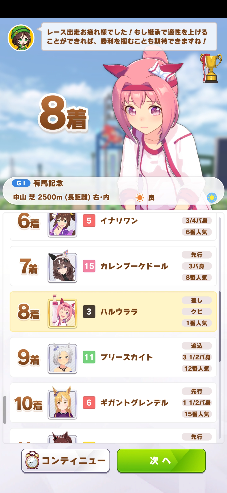
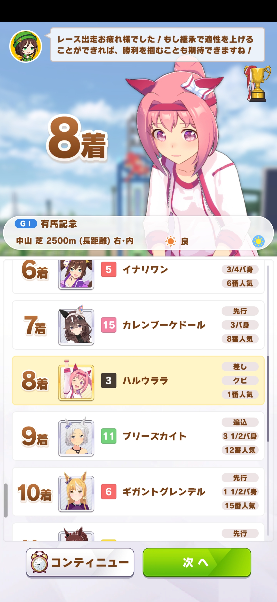

笔者入坑赛马娘手游算是有一年了，不仅打过了URA和凯旋门，也体验到了今年的两个新剧本（无人岛和温泉乡），但是目前在遗传机制的研究和种马适性调整上还是一筹莫展。正好很多人都在拿春乌拉拉（ハルウララ，亦译作“春丽”）跑赢有马纪念作为长距离改造的例子，笔者今年也尝试了若干次，失败了三次，最终在今年的年末成功了。
前情提要
之前就有注重过草地和长距离属性的种马培养。春乌拉拉既不擅长草地场也不擅长长距离比赛，那么两个属性都应该提升才对。我培育了两个分别带有草地和长距离三星属性的种马给春乌拉拉继承，初始的草地属性和长距离属性能干到D和E，本来以为在育成过程的两次继承中属性可以再升级达到C的水平，可能是相性不太好导致触发概率较低的缘故结果还是没能升级到C的水平。得过且过看到能跑赢有马纪念前一个回合的目黑纪念（GII级别）觉得下一场比赛不是第2就是第3，最后也是成功地翻车了。
 

即使我有一个草地S属性带长距离三星的种马做继承最终都会失败，我寻思着是不是我的支援卡不行可能数值还不够，直到我在哔哩哔哩上看到一个草地E的春乌拉拉跑赢了有马纪念，我才明白我没有搞清楚游戏对于育成马娘的场地/距离/脚质的惩罚机制。这也就说明了距离适性的优先级是大于场地适性的。
育成过程
正好上一次育成意外出了个三星蓝因子、固有技能因子和两星红因子的特别周（スペシャルウィーク），拿去强化一下因子再搭配一匹三星红因子的种马就可以让春乌拉拉开局就能拿到长距离C的适性。

另外，关于支援卡的选择问题，春乌拉拉游戏默认选的最佳支援卡是两张根性卡。因为我们要跑长距离，所以我们主要是选择速度、耐力和力量卡。因为上次养成的特别周也带了很多长距离技能，我希望春乌拉拉育成的时候也可以用上，所以我额外又加了一个智力（賢さ）卡。
关于游戏各个属性的效果，我的理解是：速度（スピード）决定能发挥出水平的上限，所以无论长短距离都要提；耐力（スタミナ）决定发挥水平下限，长距离是肯定要凹的；力量（パワー）影响速度增大时的加速度和爬坡速度，中山竞马场的终盘坡度很大，需要提；智力影响技能发动概率，提不提取决于技能的多少。根性的话，貌似只影响位置争夺，我已经有很好的支援卡可以凹到较高的数值，所以重心还是放在其他四项属性上。
开局正常养。春乌拉拉的剧本里的育成目标中就有三个是收集粉丝，这一段时间挺长的，基本上只要跑一次GIII及以上级别的比赛就可以提前达成目标，所以前期要专注训练。主要属性拉到A的时候就可以拉出来跑长距离比赛试试水了。我选的是GII级别的阿根廷共和国杯（アルゼンチン共和国杯），因为智力还没拉到A所以只买了几个技能，打算搏一搏。

长距离GII赛事能跑第一说明基本稳了。一直到有马纪念专心提数值就可以了。比赛前要多买几个长距离的技能，我的特别周种马还带了几个绿色技能（环境被动增益）也一起买了。如果有马纪念没跑到第一多用几次闹钟就能解决问题。


事实上最后这个数值跑有马纪念基本没有悬念（掉心情除外）。国服也有A级春乌拉拉跑赢有马纪念的例子（但他的草地属性拉到了D），说明这个至少没有想象中那么难。只要有种马并且培育方向到位，你也可以让春乌拉拉跑赢长距离比赛（中距离同理，但凯旋门杯除外，因为我没跑成功过所以不好说hhh）。这里也提前祝大家马年快乐！